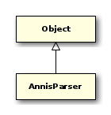
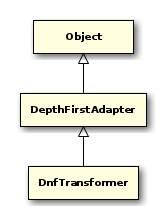
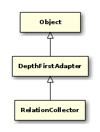
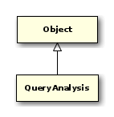
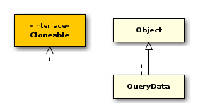
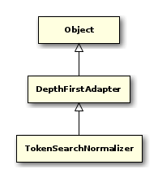

public class AnnisParser { // Public Constructors public AnnisParser();
// Public Static Methods public static String dumpTree(Start start);
// Public Methods public String dumpTree(String annisQuery);
public List<DepthFirstAdapter> getPostProcessors();
public Start parse(String annisQuery);
public void setPostProcessors(List<DepthFirstAdapter> postProcessors);
}

public static class AnnisParser.InternalParser { // Public Constructors public AnnisParser.InternalParser();
// Public Methods public Start parse(String input) throws ParserException, LexerException, IOException;
}

public class ClauseAnalysis extends DepthFirstAdapter { // Public Constructors public ClauseAnalysis();
public ClauseAnalysis(int aliasCount, List<QueryAnnotation> metaAnnotations, Map<String, QueryNode> nodes, int precedenceBound);
// Public Methods public void caseAAndExpr(AAndExpr node);
public void caseAAnnotationSearchExpr(AAnnotationSearchExpr node);
public void caseAAnyNodeSearchExpr(AAnyNodeSearchExpr node);
public void caseAArityLingOp(AArityLingOp node);
public void caseADirectDominanceSpec(ADirectDominanceSpec node);
public void caseADirectPointingRelationSpec(ADirectPointingRelationSpec node);
public void caseADirectPrecedenceSpec(ADirectPrecedenceSpec node);
public void caseADirectSiblingSpec(ADirectSiblingSpec node);
public void caseADocumentConstraintExpr(ADocumentConstraintExpr node);
public void caseAExactOverlapLingOp(AExactOverlapLingOp node);
public void caseAGroupedExpr(AGroupedExpr node);
public void caseAIdentityLingOp(AIdentityLingOp node);
public void caseAImplicitAndExpr(AImplicitAndExpr node);
public void caseAInclusionLingOp(AInclusionLingOp node);
public void caseAIndirectDominanceSpec(AIndirectDominanceSpec node);
public void caseAIndirectPointingRelationSpec(AIndirectPointingRelationSpec node);
public void caseAIndirectPrecedenceSpec(AIndirectPrecedenceSpec node);
public void caseAIndirectSiblingSpec(AIndirectSiblingSpec node);
public void caseALeftAlignLingOp(ALeftAlignLingOp node);
public void caseALeftOverlapLingOp(ALeftOverlapLingOp node);
public void caseAMetaConstraintExpr(AMetaConstraintExpr node);
public void caseAOrExpr(AOrExpr node);
public void caseAOverlapLingOp(AOverlapLingOp node);
public void caseARangeDominanceSpec(ARangeDominanceSpec node);
public void caseARangePointingRelationSpec(ARangePointingRelationSpec node);
public void caseARangePrecedenceSpec(ARangePrecedenceSpec node);
public void caseARightAlignLingOp(ARightAlignLingOp node);
public void caseARightOverlapLingOp(ARightOverlapLingOp node);
public void caseARootLingOp(ARootLingOp node);
public void caseASameAnnotationGroupLingOp(ASameAnnotationGroupLingOp node);
public void caseATextSearchExpr(ATextSearchExpr node);
public void caseATextSearchNotEqualExpr(ATextSearchNotEqualExpr node);
public void caseATokenArityLingOp(ATokenArityLingOp node);
public List<QueryAnnotation> getMetaAnnotations();
public Collection<QueryNode> getNodes();
public int getPrecedenceBound();
public int nodesCount();
public void setPrecedenceBound(int precedenceBound);
}
- Autor
-
thomas

public class DnfNodeRelNumberUpdater extends DepthFirstAdapter { // Public Constructors public DnfNodeRelNumberUpdater(SearchExpressionCounter origCounter);
// Public Methods public void caseAAndExpr(AAndExpr node);
public void caseAAnnotationSearchExpr(AAnnotationSearchExpr node);
public void caseAAnyNodeSearchExpr(AAnyNodeSearchExpr node);
public void caseALinguisticConstraintExpr(ALinguisticConstraintExpr node);
public void caseATextSearchExpr(ATextSearchExpr node);
public void caseATextSearchNotEqualExpr(ATextSearchNotEqualExpr node);
}
- Autor
-
thomas

public class DnfTransformer extends DepthFirstAdapter { // Public Constructors public DnfTransformer();
// Public Methods public void caseStart(Start node);
public PExpr clone(PExpr node);
public List<AAndExpr> distribute(List<AOrExpr> ors, List<AAndExpr> ands);
public SearchExpressionCounter getCounter();
public int getPosition(PExpr expr);
public List<PExpr> listClauses(Start statement) throws UnknownExpressionException;
public PExpr normalize(AAndExpr node);
public PExpr normalize(AOrExpr node);
public PExpr normalize(PExpr expr);
public void setCounter(SearchExpressionCounter counter);
}

public class NodeRelationNormalizer extends DepthFirstAdapter { // Public Constructors public NodeRelationNormalizer();
// Public Methods public void caseAAndExpr(AAndExpr node);
public void split(AAndExpr expr, ALinguisticConstraintExpr relation, SearchExpressionCounter counter, boolean replaceLeft);
}
- Autor
-
thomas

public static class NodeRelationNormalizer.RelationCollector extends DepthFirstAdapter { // Public Constructors public NodeRelationNormalizer.RelationCollector();
// Public Methods public void caseALinguisticConstraintExpr(ALinguisticConstraintExpr node);
public Map<String, List<ALinguisticConstraintExpr>> getIsIn();
}

public class NodeSearchNormalizer extends DepthFirstAdapter { // Public Constructors public NodeSearchNormalizer();
// Public Methods public void caseAAnnotationSearchExpr(AAnnotationSearchExpr node);
}

public class QueryAnalysis { // Public Constructors public QueryAnalysis();
// Public Methods public QueryData analyzeQuery(Start statement, List<Long> corpusList);
public ClauseAnalysis getClauseAnalysis();
public DnfTransformer getDnfTransformer();
public NodeRelationNormalizer getNodeRelationNormalizer();
public boolean isNormalizeNodesInEdgeRelations();
public void setClauseAnalysis(ClauseAnalysis clauseAnalysis);
public void setDnfTransformer(DnfTransformer dnfTransformer);
public void setNodeRelationNormalizer(NodeRelationNormalizer nodeRelationNormalizer);
public void setNormalizeNodesInEdgeRelations(boolean normalizeNodesInEdgeRelations);
}
- Autor
-
thomas

public class QueryData implements Cloneable { // Public Constructors public QueryData();
// Public Methods public boolean addAlternative(List<QueryNode> nodes);
public boolean addExtension(Object extension);
public boolean addMetaAnnotations(List<QueryAnnotation> annotations);
public QueryData clone();
public List<List<QueryNode>> getAlternatives();
public HashMap<Long, Properties> getCorpusConfiguration();
public List<Long> getCorpusList();
public List<Long> getDocuments();
public Set<Object> getExtensions();
public List<T> getExtensions(Class<T> clazz);
public int getMaxWidth();
public List<QueryAnnotation> getMetaData();
public void setAlternatives(List<List<QueryNode>> alternatives);
public void setCorpusConfiguration(HashMap<Long, Properties> corpusConfiguration);
public void setCorpusList(List<Long> corpusList);
public void setDocuments(List<Long> documents);
public void setMaxWidth(int maxWidth);
public void setMetaData(List<QueryAnnotation> metaData);
public String toString();
}

public class QueryValidator extends DepthFirstAdapter { // Public Constructors public QueryValidator();
// Public Methods public void caseAAndExpr(AAndExpr node);
public void caseALinguisticConstraintExpr(ALinguisticConstraintExpr node);
public void caseStart(Start node);
}

public class SearchExpressionCounter extends DepthFirstAdapter { // Public Constructors public SearchExpressionCounter();
// Public Methods public void caseAAnnotationSearchExpr(AAnnotationSearchExpr node);
public void caseAAnyNodeSearchExpr(AAnyNodeSearchExpr node);
public void caseATextSearchExpr(ATextSearchExpr node);
public void caseATextSearchNotEqualExpr(ATextSearchNotEqualExpr node);
public int getCount();
public int getPosition(Node expr);
public Node getSearchExpression(int i);
public void mapSearchExpressionClone(Node clone, Node original);
public void setSearchPosition(Node node, int pos);
}

public class TokenSearchNormalizer extends DepthFirstAdapter { // Public Constructors public TokenSearchNormalizer();
// Public Methods public void caseAAnnotationSearchExpr(AAnnotationSearchExpr node);
}

Dump abstract syntax trees on a PrintWriter. Adapted from TreeDumper.java by Nat Pryce: http://nat.truemesh.com/archives/000531.html